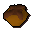

Chocolate bar
| Config name | chocolate_bar |
| Item id | 1973 |
| Value | 10 gp |
| Weight | 150g |
| Members | No |
| Tradeable | Yes |
| Stackable | No |
| Options | Eat |
| Defined in | scripts/skill_cooking/configs/cooking_inv/configs/cakes/cakes.obj |
Chocolate bar
Mmmmmmm chocolate.
Show 2 ground spawns on the world map → Open in knowledge graph →
Used to make
| Skill | Level | XP | Ingredients | Tool | How | Where | Makes |
|---|---|---|---|---|---|---|---|
| Cooking | 1 | use on object | range | can spoil into | |||
| Cooking | 1 | use on object | range |  Unfinished bowl | |||
| Cooking | 1 | use on item | |||||
| Cooking | 50 | 30.0 | use on item | ||||
| Herblore | 1 | use on item | members; grind |
Sold at
| Shop | Shopkeeper | Stock |
|---|---|---|
| Grand Tree Groceries | 8 | |
| Funch's Fine Groceries | 5 | |
| Food Store | 1 | |
| Frenita's Cookery Shop. | 2 |
Ground spawns
| Area | Coordinates | Level | Count | Map |
|---|---|---|---|---|
| Cooks' Guild | 3143, 3452 | 0 | 1 | view |
| Wizards' Tower (underground) | 3152, 9560 | 0 | 1 | view |
Referenced in scripts
scripts/_test/scripts/cheats/cheat_bank.rs2scripts/_test/scripts/debug/debug_gnomecooking.rs2scripts/areas/area_gnome/scripts/gnome_bar.rs2scripts/areas/area_gnome/scripts/gnome_restaurant.rs2scripts/player/scripts/cracker.rs2scripts/skill_cooking/scripts/cooking_inv/scripts/cakes/cakes.rs2scripts/skill_cooking/scripts/gnome_cooking/gnome_battas.rs2scripts/skill_cooking/scripts/gnome_cooking/gnome_bowls.rs2scripts/skill_cooking/scripts/gnome_cooking/gnome_cocktail_finish.rs2scripts/skill_cooking/scripts/gnome_cooking/gnome_crunchies.rs2